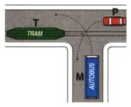
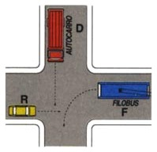
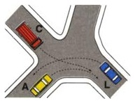
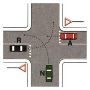
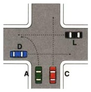
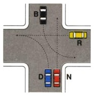
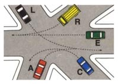

What this topic is about
These questions show a junction with several vehicles and ask who goes first, second, and last. There is little to memorize: a short set of rules, applied in order at each crossing, settles every figure.
Solve the figure before you read the statement. Work out the whole order in your head first, then check what the statement claims against it. The statements are written to sound plausible and to nudge you toward a wrong order, but they cannot mislead you if you already have the answer.
The rules
- A traffic officer directing traffic overrides everything else, lights and signs included.
- Emergency vehicles on a call, with siren and flashing lights, take precedence over every other vehicle. Yield to them and stop if needed, even when your own light is green, and remember they may cross a red. Only an officer outranks them.
- Traffic lights govern the junction whenever they are operating.
- Priority signs come next when there is no light or officer. A STOP or a YIELD makes those vehicles wait; the yellow diamond (a priority road) grants precedence. Signs split the junction into two groups: the favored road crosses first, the signed road after, each group ordered by the rules below.
- Rail vehicles have precedence. A tram or train goes before ordinary vehicles, even one it meets from the left, unless a sign or signal says otherwise.
- At a junction with no officer, signs, or lights, the general rules below decide, and you apply them at every point that your vehicle will cross the path of another vehicle as you proceed through the intersection. That is, you may have precedence to enter an intersection and then not have precedence to exit the intersection if your path crosses more than one path of other vehicles crossing the intersection. A challenge is knowing the intended path of the other drivers at the intersection. This may be clear based on whether and which turn signals are on. However, as the intersection gets complicated, it may not be obvious, and drivers need to be extra cautious.
- When your path crosses the path of a vehicle on your right, yield to it. Read the arrows first: you do not have to yield to a vehicle on your right that turns away without crossing your path.
- Where paths cross, the vehicles going straight through an intersection or turning right at an intersection have priority over vehicles turning left at the intersection.
- Precedence is a right, not a guarantee. Even when the order says you go, make sure the others are actually yielding; if they are not, slow down and give it up, stopping if necessary. Failing to yield costs 5 or 6 license points.
- Two vehicles cross at the same time only when their paths never meet AND neither of them still owes the way to a third vehicle. Running side by side, or along the same road in opposite directions, is not enough by itself.
- Only a vehicle turning left waits at the center of the junction. Everyone else clears it in one movement, and a vehicle held by a give-way or stop sign waits at the sign, before the junction, entering only when it can finish the crossing.
- When every vehicle has somebody on its right, the right-hand rule points in a circle and settles nothing. The lock is broken by the vehicle whose path crosses nobody's: that one goes first, and the rule resumes for the rest.
- Approaching a junction, every driver moderates speed, the one with precedence included.
Coming from the USA, note three differences. Italy has no all-way stop, so an unmarked junction is not "everyone stops and goes in arrival order." You need not stop when nothing is coming, only slow enough that you could. Arrival order is irrelevant; there is no "I got here first." And nobody is waved through: everyone applies the same rules at once, which is what produces the tidy chains these figures test.
What never decides the order
Type, size, speed and job are all irrelevant. A bus, trolleybus, truck, oversize load or public-service vehicle gains no priority from what it is, and "the fastest goes first" is always false. Only two kinds of vehicle jump the queue: rail vehicles and emergency vehicles with siren and lights. Examples 1 and 2 below show both traps as they appear in the figures.
Worked examples
Start with the short ones. Each isolates a single idea, and together they cover almost every figure you are likely to meet. The last two are the hard cases, so leave them until the rest feel easy.
1. Rails jump the queue, public service does not

T is a tram and M is a bus. The hierarchy settles first place before the right-hand rule is even reached: rail vehicles go first, so T leads. P and M then sort themselves out by the ordinary rule, giving T, P, M.
The two false statements are the whole lesson. "M has priority because it is in public service" is wrong, because a bus is an ordinary vehicle and gains nothing from its job. "T may go first only if M is not on a scheduled run" is also wrong: the tram's priority comes from the rails, and nothing suspends it.
2. A trolleybus is not a rail vehicle

F is a trolleybus (filobus), and the statement to reject is that it goes first because it is tied to its overhead wires. It runs on tires rather than rails, so it is an ordinary vehicle, and D, a truck, gains nothing special either. The order comes entirely from rule 7, yield to your right: R, D, F.
Take this together with the example above and the pair reduces to a single line: rails yes, wires no.
3. Yield to your right, on its own

Here there are no signs and no rails, nothing but yield to your right. A has no one on its right whose path crosses it, so it goes first. C must yield to A, which is the true statement on the card, and L goes last.
Notice what the card denies: "C must wait for L" is false, because C waits for A alone. Being third does not mean waiting for everyone ahead of you; each vehicle owes the way only to the specific vehicles that outrank it.
4. Signs split the junction into two groups

A and R both face a yield sign, which is why the card says they must stop if necessary. N does not, so N crosses first, and that much is decided before the right-hand rule is consulted at all.
You then order the yielding group among themselves, and the turning rule does it: A goes straight while R turns left across A's path, so A goes first. The full order is N, A, R. This is the two-group pattern in miniature: settle the groups by the signs, then settle each group by the ordinary rules.
5. When two vehicles go together

A and C sit side by side on the same approach. A car in the next lane is not "a vehicle on your right," because that rule concerns traffic converging from another arm. Since their paths diverge, neither is in the other's way, and they move off together. The order is L, then A and C, then D.
The false statements drill the point from both sides. "D and L pass simultaneously" is false, because those two come from facing arms and their paths do cross. And "the fastest vehicle passes first" is false, as it always is.
Use this as your test: do these two ever need the same piece of asphalt? If they never do, they go together.
6. Why the left-turner waits at the center

Read the figure first. B comes from the top, turning left. R comes from the right, going straight. D and N sit side by side on the bottom approach, D turning left and N going straight. There are no lights, signs or rails, so it is rule 7 and the turns.
B's turn crosses the paths of two vehicles, and it needs to follow precedence for each crossing, even if it means that B must stop in the middle of the intersection as R passes behind it. Against R it goes first, because R arrives on B's left and B is on R's right. Against N it must yield, because N is oncoming and going straight. So B advances across R's path and stops at the edge of N's, which is the center.
The order then falls out on its own:
- B enters and stops at the center. It has a free right, so it acts first, but for a left-turner acting first means staging, not finishing.
- R passes behind B, whose advance has carried it out of R's way.
- D and N pass together, as lane-mates with diverging paths, neither in the other's way. D and B are facing left-turners, so they never meet either.
- B completes its turn, now that the oncoming N has cleared.
B is first to act and last to finish, which is exactly what the statements probe.
7. When the chain alone is not enough
Most figures fall straight out of the method above, but a minority do not, and this is the shape that catches people. The trouble is never that the rules failed. It is that the chain gives you the candidates and the turns decide between them.

Read the figure carefully, because six arms leave more room to slip. Going round to the right you have C, E, R, L, an empty lane, then A, and back to C. The turns are what matter: C turns left into A's arm, A turns right into E's arm, E goes straight to the empty arm, R turns right into the empty arm, and L turns left into E's arm.
The tempting answer applies "yield to your right" and nothing else: C waits for E, E for R, R for L, and L's right is empty so L waits for no one. That gives L, R, E, C, A, and it is wrong. The correct order is C, A, L, R, E.
Two links in that easy chain do not actually hold:
- C owes E nothing. E is on C's right, but E drives straight across to the far arm while C makes a tight left into the arm beside its own. Their paths never meet, so no duty arises, and C, owing nobody, goes first.
- L is held by a rule that has nothing to do with its right. L's right really is empty, but L turns left into E's arm exactly as A turns right into it. The two converge on one exit, and the left-turner yields, so L waits for A, which sits nowhere near L's right.
Here is the full order with its reasoning: C enters first because its left turn crosses nobody; A follows because C is turning into A's road from A's right; L comes next because it converges with A and yields as the left-turner; R because L is on its right and their paths cross; and E last, because R is on its right and L cuts across E's road.
The lesson is that nothing overrode rule 7. It simply did not apply where the paths never met, and the turning rule settled a pair the chain could not reach. So run the chain to get your candidates, then ask two questions before you commit: does the vehicle on my right actually cross my path, and is anyone converging on the same exit?
Summary
- Decide precedence at every crossing point: you may have the right to enter but, if your path crosses more than one other vehicle's, not the right to exit.
- Apply the rules in order: an officer, then emergency vehicles, then lights, then signs, then rail vehicles; where none of those decides it, work each crossing with yield to your right, then straight and right before left.
- Yield to a vehicle on your right whose path would cross yours (read the arrows).
- A left-turner yields to oncoming traffic and waits at the center, so it often enters first and finishes last.
- Two vehicles go together only if their paths never cross: facing straights, side-by-side lane-mates, or facing left-turners.
- Build the order by repeatedly taking the vehicle that owes nothing at that crossing.
- Type, size and speed never matter; only rails and emergency vehicles jump the queue.
- Precedence is a right, not a guarantee: even when the order says you go, make sure the others are actually yielding, and if they are not, slow down and give it up, stopping if necessary. Failing to yield costs 5 or 6 license points.